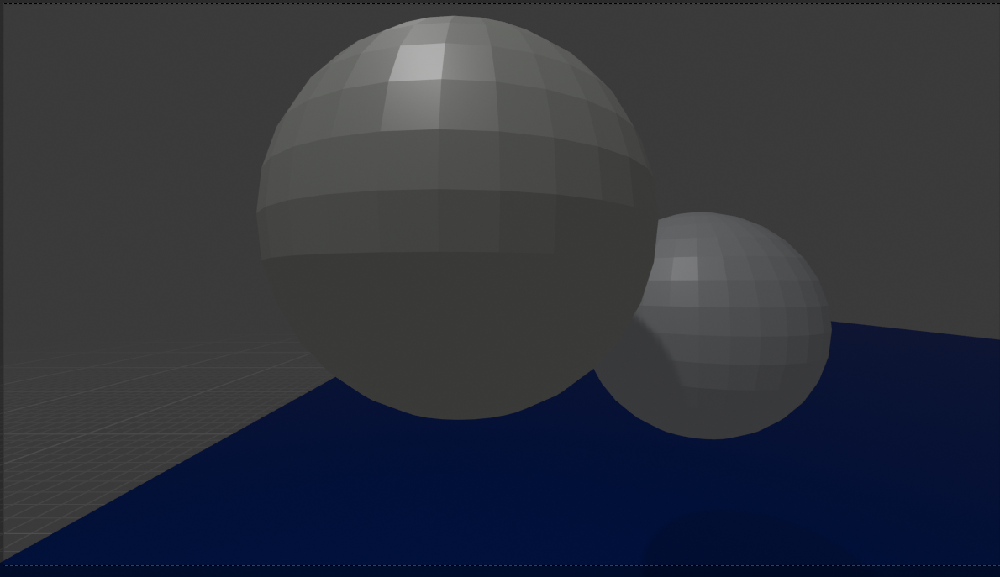

This was rendered in Blender, and all of the values below are from this rendering.
Sphere 1
- Position:
- X: -17.3 m
- Y: -5.2 m
- Z: 9.3 m
- Scale: 1, 1, 1
Sphere 2
- Position:
- X: -18.8 m
- Y: 3.25 m
- Z: 8.65 m
- Scale: 1, 1, 1
Plane (Floor)
- Position:
- X: -100 m
- Y: 11.7 m
- Z: 4.4 m
- Scale: 100, 25, 1
Camera
- Position:
- Rotation:
- X: 90 degrees
- Y: 0 degrees
- Z: 90 degrees
- Scale: 1, 1, 1
- Focal Length: 15 mm
- Clip Start: 0.1 m
- Clip End: 100 m
Light
- Position:
- X: -15 m
- Y: -6.5 m
- Z: 15 m
- Rotation:
- X: 37 degrees
- Y: 3 degrees
- Z: 107 degrees
- Scale: 1, 1, 1
- Power: 1000 W
- Diffuse: 0.15
- Specular: 1.00
- Volume: 1.00